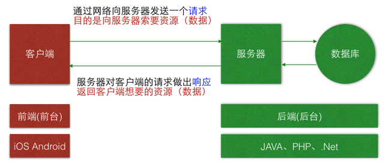

指的是客户端,服务器架构的意思,很多常见的软件都是这种架构
对于C/S架构,最为常见的例子就是网络游戏,比如LOL,WOW如果不联网无法使用,你在软件内所做的所有操作通过互联网能够传递到其他的的玩家身上
性能较高:可以将一部分的计算工作放在客户端上,这样服务器只需要处理数据即可
界面酷炫:客户端可以使用更多系统提供的效果(比如传感信息，浏览器就很难做到),做出更为炫目的效果
更新软件:如果推出了新版本,不更新客户端无法登陆使用(一部分)
不同设备访问:如果使用其他的电脑,没有安装客户端的话就无法登陆软件(比如收发邮件)
指的是浏览器,服务器,是WEB兴起之后的一种架构
现在所有的网站都是B/S架构,较为常见的例子有百度,知乎,网易云音乐Web等等,所有只需要通过浏览器即可使用.
更新简洁:如果需要更新内容了,对开发人员而言需要更改服务器的内容,但是对用户而言只需要刷新浏览器即可
多设备同步:所有数据都在网上,只要能够使用浏览器即可登录使用
性能较低:相比于客户端应用性能较低,但是随着硬件性能的提升,这个差距在缩小
浏览器兼容:处理低版本的浏览器显示问题一直是前端开发人员头痛的问题之一,移动设备兼容性较好,ie6已经越来越少人用了
服务器（Server）：为客户端提供服务、数据、资源的机器
我们可以把服务器看做一个特殊的、功能强大、没有外接设备(屏幕、键盘、鼠标)的电脑。一个服务器一个IP，有些大公司，拥有成千上万个服务器，我们通过主机域名来访问资源，服务器是随机分配给我们的。
文件服务器、数据库服务器、邮件服务器、Web 服务器等；
服务器软件提供了某种服务的计算器,我们称之为服务器,那么这些赋予计算器各种服务功能的软件主要有哪一些呢?
常见的服务器软件有：
文件服务器：Server-U、FileZilla、VsFTP等；
数据库服务器：Oracle、MySQL、PostgreSQL、MSSQL等；
邮件服务器：Postfix、Sendmail等；
Web服务器：Apache、Nginx、IIS、Tomcat、NodeJS等； 这里我们主要介绍HTTP服务器
按操作系统分:Linux服务器、Windows服务器等；
按照浏览器的访问权限来分外网服务器
别名：远程服务器，任何网段的设备都能访问的服务器
应用场景：应用上线后使用的服务器
使用人群：供全体用户使用
速度：取决于服务器的性能、用户的网速
内网服务器
别名：本地服务器，只有连同样内网的设备才能访问到的服务器
应用场景：应用处于开发、测试阶段使用的服务器
使用人群：仅供公司内部的开发人员、测试人员使用
速度：由于是局域网，所以速度飞快，有助于提高开发测试效率
一般公司会有三套服务器：本地测试服务器、外网测试服务器、外网正式服务器
内网测试可以直接测试服务器的并发连接性能
外网的话首先要考验你的互联网导致的延时和掉包的因素
内网和外网的区别：内网可以访问外网服务器，也可以设置不能访问。
外网肯定不能访问内网服务器。
内网就是我们平常说的局域网。
局域网就是在固定的一个地理区域内由2台以上的电脑用网线和其他网络设备搭建而成的一个封闭的计算机组。
它可以是邻居之间的2台电脑，也可以是一幢100层大楼里的1000台电脑。
可以是独立封闭运行的（配置了服务器，建立了内部的web网页，论坛等等，但时不能上QQ、MSN等等，不能与外部发生通信），也可以是和外网相连接的
外网就是与internet连接的网络，可以跟世界上任何地方取得联系，但不能访问人家的内网服务器。外网就不经路由器或交换机就可以上网的网络，可以直接被外界所访问到。无需经如何设备，直接连接电脑。
用猫、路由器连接的都是外网。内网只用交换机
但是：有些光纤到楼、小区宽带、教育网、有线电视Cable Modem上网虽然地域范围比较大但本质上还是基于以太网技术，所以仍然属于内网。
判断内网和外网最简单的方法：判断网段 (有专业的方法，不会)
内网IP的网段：
10.0.0.0 / 8:10.0.0.0 ~ 10.255.255.255
172.16.0.0 / 12.172.16.0.0 ~ 172.31.255.255
192.168.0.0 / 16.192.168.0.0 ~ 192.168.255.255
为什么生活中很多的局域网？其实外网IP是比较紧张的，现在的电脑的普及使得外网IP根本不够用，根本做不到一台电脑一个外网IP，内网的产生就是为了解决这个难题的！
路由器只需一个外网IP就可以供下面的N多电脑联网。因为不同的内网IP是可以重复使用（任何一台电脑要上网，都必须在网络上有一个唯一的IP地址。在局域网内，这个IP地址是唯一的。但是在另外一个局域网，这个IP地址仍然能够使用）。拿网吧举例，一个网吧N多台电脑，其实他只要一个外网IP就可以给下面的电脑提供上网
开发服务器的语言很多：Java、PHP、.net、node.js、python、go、ruby、erlang等等
不同语言开发的服务器，对应的配置电脑为服务器的软件也不一样(这里说的都是Windows系统的)
java — Tomcat
php — wamp (w-windows、a-apache、m - mysql、p-php)
node.js — NodeJS
在iOS与前端的学习中，Apache使用起来最方便。所以这里主要说Web服务器：- http服务器： - Apache服务器
Apache服务器的配置
Windows系统：wamp软件安装，然后修改一些配置信息
Mac系统：自带有Apache服务器，通过终端配置一些信息，然后打开即可
在配置信息中，我们会指定一个文件夹，作为别人访问我们的电脑服务器时能获取到的文件 — 网站根目录
被访问的时候
如果网站根目录中，有index命名的文件(不管是HTML文件，还是PHP文件)，会直接运行.
如果没有index命名的，那么就会将该文件夹内的文件，以列表形式展示出来.
PHP服务器，是怎么接收的？
1. 创建PHP文件.php文件，写PHP代码，也可以写HTML+CSS+JS代码，跟写在.html文件中，显示效果一模一样。
不过，PHP代码，需要写在 <?php ?> 标签中，而且标签内只能写PHP代码。
.html文件里，不能写PHP代码
要放在我们服务器里的根目录里，PHP代码只有放在服务器中，被访问的时候，才会执行
2. 取值别人根据URL，访问该PHP文件的时候，如果携带参数，那就会将参数，传值到该文件
取值：php中为我们预定义了几个 超全局对象
GET取值：
$_GET 是一个关系型数组 $_GET['key']
POST取值：
$_POST 也是一个关系型数组 $_POST['key']
POST上传文件: $_FILES
获取 上传的文件信息 关系型数组
$fileArr = $_FILES['upFile'];
获取 上传的文件的原本名字
$fileName = $fileArr['name'];
获取保存在服务器的那个位置
$filePath = $fileArr['tmp_name'];
PHP将上传的文件，保存至指定位置
参数1：是从上传的文件信息中，取的Path值
参数2：我们指定的存储位置
move_uploaded_file($filePath,’文件夹/‘.$fileName); //注意：bug: Mac本上，必须要设置一些指定路径文件夹的权限，设置为everyone可读写，否则，访问的时候，是写不进去东西的
注意：key的值就是提交的参数名，需要保持一致
3. 返回访问结果如果请求的是HTML文件：原封不动返回，服务器不会动这个HTML文件
如果请求的是PHP文件：
HTML部分的代码，原封不动的返回
<?php ?>里的PHP代码，在服务器端执行，只返回输出函数：echo、print_f 打印的结果
试想一下,如果一个网站的注册用户有1千万个那么应该使用什么格式,什么方式来保存这些数据呢?
常规保存方式:因为内容是文本,所以直接使用文本文件保存肯定可以,但是当一个文本文件很大很大时,打开是异常缓慢的
.excel文件可以用来进行数据的统计,分析等操作,但是当很多个人需要访问同一个.excel文件时,性能也很差
按照数据结构来组织,存储和管理数据的仓库,软件开发行业一般指的是数据库软件,常见的有:Oracle、MySQL、MSSQL等
特点:
数据共享:多用户同时访问数据的稳定性
故障恢复:数据库软件提供了一套的方法,可以用来发现错误并且修复错误
减少数据冗余:由于大家都可以使用同一套数据,没有必要重复创建了
从事管理和维护数据库管理系统(DBMS)的相关工作人员的统称，属于运维工程师的一个分支
工作是:
1.主要负责业务数据库从设计、测试到部署交付的全生命周期管理。
2.保证数据库的稳定性,安全性,完整性和高性能.
在国外，也有公司把DBA称作数据库工程师(Database Engineer)，两者的工作内容基本相同，都是保证数据库服务7*24小时的稳定高效运转，但是需要区分一下DBA和数据库开发工程师(Database Developer)：
1) 数据库开发工程师的主要职责是设计和开发数据库管理系统和数据库应用软件系统，侧重于软件研发；
2) DBA的主要职责是运维和管理数据库管理系统，侧重于运维管理。
在都知道了浏览器、客户端、服务器、数据库是什么之后，接下来就是核心-重点：浏览器/客户端与服务器之间的网络通讯
学习网络编程：1.可以掌握实时更新数据的手段
2.是开发优秀应用的前提和基础
网络通讯三要素:传输协议、端口号、IP通过 IP 找机器，通过 端口 找程序，通过 协议 确定如何传输数据
要了解传输协议，首先需要知道传输过程中分为哪几层传输，每一层的传输协议是不一样的。
| 应用层 | 网络服务与最终用户的一个接口 HTTP协议 |
| 表示层 | 数据的表示、安全、压缩。 |
| 会话层 | 建立、管理、终止会话 |
| 以上三层：http协议(所有的万维网文件都必须遵守)、HLS(渐进流式传输协议，苹果改造HTTP协议创建的流媒体协议)、RTMP/MMS(实时流式传输协议-微软出品)、XMPP/IMPP/PRIM/SIP(四种IM(即时消息通讯)协议，XMPP最灵活常用) 等等好多好多协议 | |
| 传输层 | 遵循TCP/UDP协议，定义传输数据的协议端口号 HTTP协议的端口号默认是80，我们可以根据自己实际情况改的 |
| 网络层 | 路由器 遵循IP协议，会给电脑分配IP，进行逻辑地址寻址 |
| 数据链路层 | 网卡、网桥、交换机 建立逻辑连接、进行硬件地址寻址、差错校验等功能。（由底层网络定义协议） |
| 物理层 | 光纤、电话线 建立、维护、断开物理连接。（由底层网络定义协议） |
注意：
1. 传输层和上面的三层就是在客户端里的了
2. 会话层、表示层、应用层在五层模型中合并为应用层
解析说明：
计算机A -> B，之所以叫封包/解包，是因为当我们应用层需要获取数据时
会在应用层生成一个请求的数据包(是按照HTTP协议生成的)
然后到了传输层，会按照TCP/UDP协议进行封装包装，加了个端口号
到了网络层进行IP协议的封装，加了个协议号
然后经过下两层传到服务器
服务器会进行一一相对应的解封，知道服务器的应用层，会按照请求，返回响应(响应返回去的过程与来时一样)
双方规定好的约定
HTTP协议HTTP 的全称是 Hypertext Transfer Protocol，超文本传输协议
超文本：图片，视频，zip等
HTTP 协议是网络编程使用最为广泛的协议，因为很简单
HTTP协议中的内容：规定URL的格式
规定客户端和服务器之间的数据传输格式，让客户端和服务器能有效地进行数据沟通
1）规定请求怎么发
2）规定响应怎么发
URL的基本格式协议:// 主机地址: 端口号//路径
http://www.baidu.com: 80//…… (http默认的端口号是80，可以省)
HTTP协议特点1. 简单快速
HTTP协议简单，所以 HTTP 服务器的程序规模小，通信速度快
2. 灵活
HTTP 允许传输任意类型的数据
3. http的版本
HTTP 0.9 和 1.0 使用非持续连接
限制每次连接只处理一个请求，服务器对客户端的请求做出响应后，立刻断开连接，这种方式可以节省传输时间
HTTP 1.1 使用持续连接（如今最常用）
不必为每个web对象创建一个新的连接，一个连接可以传送多个对象，不会创建那么多的请求了
客户端向服务器索取数据的一种行为
HTTP协议规定：一个完整的由客户端发给服务器的 HTTP 请求 需要包含以下内容：
请求行客户端给服务器的一些额外信息，指定 请求方法、请求资源路径 以及 HTTP协议版本
格式：
GET/路径 HTTP/1.1
分为两部分：get/获取根目录，HTTP/1.1 表示用的http协议版本
请求头客户端给服务器发送的一些附加信息，如对客户端的环境描述、客户端请求的主机地址等信息
请求头中至少包含以下信息
客户端要访问的服务器主机地址 Host: m.baidu.com
请求头中还可以包含以下信息
客户端发给服务器的具体数据，例如要上传的文件数据
请求格式
每一项请求信息末尾使用 \r\n
最后一个请求项末尾使用 \r\n\r\n 表示请求结束
服务器对客户端的请求做出的反应，一般指返回数据给客户端
HTTP协议规定：一个完整的 HTTP 响应包含以下内容：
状态行包含了HTTP协议版本、状态码、状态英文名称
请求成功 HTTP/1.1 200 OK
服务器返回给客户端的一些额外信息，包含了对服务器的描述、对返回数据的描述
服务器返回给客户端的具体二进制数据
HTTP 协议的请求行有一个请求方法, 它有 8 种, 但是我们只要了解五种 (GET,POST,HEAD,DELETE,PUT)。
http协议中请求方法的作用是什么？表示以何种方式去和服务器进行数据交互
GET1. GET 的本质是“得”，从服务器拿数据，效率更高
GET请求能够被缓存，保存在 Cache 目录中 \bundleId 下 Cache.db 中
cfurl_cache_receiver_data，缓存所有的请求数据
cfurl_cache_response，缓存所有的响应
2. 在 HTTP 协议定义中，没有对 GET 请求的数据大小限制，不过因为浏览器不同，一般限制在 2~8K 之间
3. 所有的参数包装在URL中，并且服务器的访问日志会记录，不要传递敏感信息
GET实现网址跳转的原理：
拼接网址，然后跳转。在URL添加参数, 首先在URL 添加一个? , 表示要追加参数, 多个参数用& 连接，然后跳转到这个拼接后的网址
格式:http://127.0.0.1/login.php ? username = aaa & password = bbb(username和password是服务器后台给我们的文档中固定的)
注意：
1. http 默认的请求的方法就是GET，是网络访问使用频率最好的方法。
2. GET请求能够被缓存(存储在沙盒Cache中，电脑浏览器也可以缓存在历史记录，服务器也可以缓存)(一般来讲用get请求过的网页，下次可能会快点)
3. 如果URL 中有中文或者空格,创建出来的URL 是空的 ,程序会崩溃需要进行%号转义，对URL 进行编码,
[urlString stringByAddingPercentEscapesUsingEncoding: NSUTF8StringEncoding]
POST1. POST 的本质是“给”，向服务器发送数据，也可以获得服务器处理之后的结果，效率不如 GET
2．POST请求不能被缓存
3. POST提交数据比较大，大小靠服务器的设定值限制，PHP通常限定 2M
4．URL中，只有资源路径，但不包含参数，服务器日志不会记录参数，相对更安全
5．参数被包装成二进制的数据体，放在请求体中，格式与 GET 基本一致，只是不包含 ?
所有设计用户隐私的数据（密码，银行卡号）一定记住使用 POST 方式传递
POST代码中，要用NSMutableURLRequest，要设置HTTPMethod和HTTPBody
GET 和 POST 的区别Post传输数据时，不需要在URL中显示出来，是写在请求体中的，格式一样，没有 ？号，而Get方法会在URL中显示参数值、文件名字。
大小：http 协议中的 get/post 并没有发送数据大小的限制，对发送数据大小产生限制的是浏览器以及操作系统、服务器
http 本身并没有对 url 长度有所限制。
IE 对 URL 长度的限制是 2083字节（<=IE 8）。对于其他浏览器，如 Netscape、FireFox 等，理论上没有长度限制，其限制取决于操作系统以及服务器的支持。而 chrome 遇到长度很长的 URL 时，会直接 崩溃。URL 长了，对服务器处理本来也是一种负担
缓存：GET会被手机端cache、web浏览器历史记录、服务器各种缓存，POST不会
规定：根据HTTP规范：Post就是为了将数据传送到服务器段,Get就是为了从服务器段取得数据.而Get之所以也能传送数据,只是用来设计告诉服务器,你到底需要什么样的数据.Post的信息作为http请求的内容，而Get是在Http头部传输的。
选择：一般来讲：开发的时候，这个都是后台告诉我们的
而如果是自己写,前台后台都是由我们决定的，可以自由选取使用的方式，当某种方式无法实现需求时,再去进行更改，但就提交普通的文本数据而言get跟post是一致的，post所谓的安全性跟get相比也只是多一些而已
包括：
上传单文件
上传多文件
POST JSON
POST 自定义对象(对象转字典)
小文件上传
- 大小一般都是有限制的 2-8k ，php默认限制是 2M ，超过2M的部分上传不上去的，新浪微博上传图片，单张最大允许 5M
- 单个小文件
应用场景：上传用户的头像
- 多个小文件
应用场景：微信朋友圈，微博
建立连接，形成传输数据的通道，在连接中进行大数据传输(数据大小不受限制)
通过三次握手完成连接，是可靠协议，能安全送达，但是由于必须建立连接，所以效率会稍低.
TCP三次握手一、客户端向服务器发送一个包，然后等服务器确认 （在吗）
二、服务器收到包，确认，然后发送给客户端一个包 （在）
三、客服端收到确认，再想服务器发送一个包 （那我就发数据了）
握手过程中传送的包里不包含数据，三次握手完毕后，客户端与服务器才正式开始传送数据
理想状态下，TCP连接一旦建立，在通信双方中的任何一方主动关闭连接之前，TCP 连接都将被一直保持下去。
UDP(数据报协议) ---生成数据报Socket将数据源和目的封装成数据包中，不需要建立连接，只管发送，不确认对方是否接收到因为无需连接，因此是不可靠协议。不需要建立连接，速度快
每个数据报的大小限制在64K之内
应用场景：多媒体教室／网络流媒体/直播平台/游戏
对比：TCP只是网络七大层协议中的一种，需要封装七层的，
UDP 使用UDP协议，是不用使用七大层封装的，可以直接发出去，这样的坏处就是会丢包，但也有好处：速度更块，实时性更好
应用场景：网络直播(即使丢了几帧也没事)
TCP和UDP的表现形式，可以比喻为打电话 比 对讲机
前者可以听的同时也说(也就是发送的时候，也可以接受)
后者只能发或者接，不能同时接发
像腾讯微信QQ，语音对讲表现形式虽然是UDP，但是因为丢包，所以实质上是使用的TCP(刚开始使用的是UDP，后来改的)，像好多大公司，一般都会自己写底层协议
用于标示进程的逻辑地址，不同进程的标示。
一条进程一定程度上可以表示是一个应用程序，但是有区别：一个“应用程序”一定可以找到一个“进程”，但一个“进程”不一定会有一个“应用程序”与之对应，这些进程有可能是后台程序，用户看不到，感觉不到。
作用：让应用层的各种应用进程都能将其数据通过端口向下交付给运输层。即连接应用层与网络层
端口号存在于UDP和TCP报文的首部，而协议号则是存在这个IP数据报的首部.
有效端口：0~65535，其中 0~1024由系统使用或者保留端口，开发中我们不要使用 1024 以下的端口，是可以省略的，不写表明使用协议默认的端口号。
浏览器网页浏览：
http默认80
https默认443
FTP默认20/21/990
QQ的端口号：由于QQ用的是UDP协议，默认通讯端口是4000，如果4000被占用的话，那么它就会自动改用4001端口，再被占用，以此类推。
在mac的活动监视器里可以看到一条条的进程对应的端口号
IP是TCP/IP协议族中最为核心的协议。所有的TCP、UDP、ICMP及IGMP数据到了网络层都要经过IP协议的封装，以IP数据报格式传输。它的特点如下:
不可靠（unreliable）
意思是它不能保证 IP数据报能成功地到达目的地。
IP仅提供最好的传输服务。如果发生某种错误时，如某个路由器暂时用完了缓冲区， IP有一个简单的错误处理算法：丢弃该数据报，然后发送 ICMP消息报给信源端。任何要求的可靠性必须由上层来提供（如TCP）。
无连接（connectionless）
意思是IP并不维护任何关于后续数据报的状态信息。
每个数据报的处理是相互独立的。这也说明， IP数据报可以不按发送顺序接收。如果一信源向相同的信宿发送两个连续的数据报（先是 A，然后是B） ，每个数据报都是独立地进行路由选择，可能选择不同的路线，因此B可能在A到达之前先到达。
协议号其他，太深入的模块，在这里不做赘述，网络层，经过IP协议封装之后，会生成一个协议号：
协议号是存在于IP数据报的首部的20字节的固定部分，占有8bit.该字段是指出此数据报所携带的是数据是使用何种协议，以便目的主机的IP层知道将数据部分上交给哪个处理过程。也就是协议字段告诉IP层应当如何交付数据。
简单来讲，协议号连接网络层与数据链路层
是个名词，并不是TCP和IP放在一起说了，中文名叫做传输控制协议/互联网络协议，是一种网络通信协议，它规范了网络上的所有通信设备，数据往来格式以及传送方式(传输)。
TCP/IP协议是网络的基础，是Internet的语言。
关于TCP/IP和HTTP协议的关系，网络有一段比较容易理解的介绍：
"我们在传输数据时，可以只使用(传输层网络层)TCP/IP协议，但是那样的话，没有应用层，便无法识别数据内容。
如果想要使传输的数据有意义，则必须使用到应用层HTTP协议。应用层提供了封装或者显示数据的具体形式"
实际上socket就是对TCP/IP协议的封装，Socket本身并不是协议，而是一个调用接口(API，内部按照TCP/IP协议对数据封包解包，并记录生成的端口号与IP地址)。Socket的出现只是使我们程序员能够更方便的使用TCP/IP协议栈而已，是对TCP/IP的抽象。
通过Socket，我们能更好地使用TCP/IP协议。
通信的两端，也就是客户端和服务器都有 Socket(IP地址和端口号两部分)，所以可以说网络通信其实就是在 Socket 间的通信。数据在两个 Socket 间通过 IO 传输 (input/output，一个请求可以看做一次IO传输)
Socket 是纯C语言的，是跨平台的
使用socket替代HTTP做网络请求网络通讯链中，将应用层省去，用Socket做网络请求，HTTP的内容：设置服务器的信息等
1.创建socket
使用socket函数
返回值是int ,>0就表示成功
2.创建服务器，并将我们创建的socket连接到服务器
使用connect函数，
返回值是int：0代表连接成功，其他失败)
3.向服务器发送消息
使用send函数，返回值：如果成功返回发送的字节数，如果失败返回SOCKET_ERROR
4.接收服务器返回的数据
使用recv函数，返回值：如果成功返回数据的字节数，如果失败返回SOCKET_ERROR
5.关闭连接
clock(创建的socket)
iOS移动端有一个封装的很好的socket套接字库：GCDAsyncSocket
当网络通信时采用TCP协议时，在真正的读写操作之前，server与client之间必须建立一个连接，当读写操作完成后，双方不再需要这个连接时它们可以释放这个连接，连接的建立是需要三次握手的，而释放则需要4次握手，所以说每个连接的建立都是需要资源消耗和时间消耗的
短连接数据请求结束后，立即断开连接，能够及时释放服务器资源
让服务器能够为更多的用户提供服务
长连接一旦连接建立之后，始终保持连接状态，后续只需发送和接收数据即可，数据响应更及时
长连接对服务器资源占用比较大
对交互响应要求快的应用，例如即时通讯，需要使用长连接
心跳包是检测长连接的重要技术手段
可以由服务器发送，定时向客户端发送小数据，根据回执判断客户端是否在线
也可以由客户端发送，定时向服务器发送小数据，报告客户端当前在线
网络中设备的标示，不易记忆，一般可以用主机名
IP地址：每个计算机设备、服务器设备(可以狭义地理解为一个功能非常强大的电脑)在网络中，都有对应的一个IP地址。
域名：是一串用点分隔的名字组成的Internet上，一台计算机或者一个计算机组的名称，用来标识位置
.com国际域名 全世界都可以访问 .cn中国域名
两者之间的关系？如果是前者，那么一个域名对应一个IP，如果是后者，例如百度这种大公司，肯定是个计算机组，那么这个域名下面就有好多个服务器，也就是好多个IP，并且我们通过访问主机域名，百度返回得到的IP是随机的
几个特殊的IP地址
| 127.0.0.1 | 代表本地回环地址，本机，localhost |
| 192.168.xx.xx | 代表局域网的IP地址 |
| 0.0.0.0 | 代表任意的IP地址 |
| 255.255.255.255 | 广播地址 |
IPV4：有四段
IPV6：有六段
DNS服务器注意：我们不是通过域名找到服务器的，而是通过IP地址找到的，
我们访问域名--- DNS域名解析服务器帮我们把域名转换成IP地址---DNS返回给我们的电脑--- 电脑通过IP地址找到服务器
(我们一连接上网络，在网络信息中就可以看到我们的DNS服务器)
举例：如果我们的电脑网络能上QQ等软件，但是浏览器不能上，很有可能就是DNS服务器出问题了，这个时候：要么直接输入我们要访问的网站的IP地址，要么换一个DNS服务器，谷歌提供了一个8.8.8.8，我们可以使用。